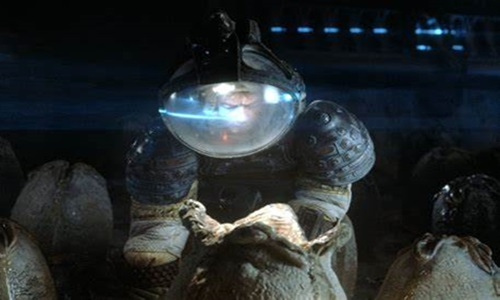
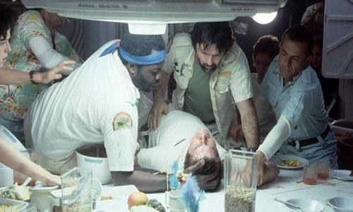
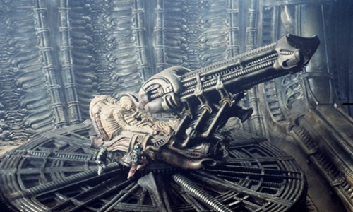

In the distant future, the crew of the commercial spaceship "Nostromo" is on its way home when the crew picks up a distress call from a distant moon. The crew is under obligation to investigate and the spaceship descends on the small planetoid afterward. After a rough landing, three crew members leave the spaceship to explore the area on the planetoid. At the same time as the crew discovers a hive colony of some unknown creature, the ship's computer deciphers the message to be a warning, not a distress call. When one of the eggs is disturbed, the crew realizes that it is not alone on the spaceship and it must deal with the consequences.


